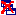

The Slot Form can be used to define and edit the attributes of a slot. The Slot Form for the selected slot is displayed in the Slot Edit Pane at the right of the Slots Tab. The Slot Form can also be displayed as a free-standing window as follows:
In the example below, the slot urgent for the class Article was double-clicked in the Template Slots pane. The slot form displays a Boolean Type, with Single Cardinality, and a text documentation pane of the urgent slot.
A slot can be used for more than one class. Each slot has a top-level (system) description; the system description can be specialized for a specific class. The scope of your edits depends on how you access the Slot Form. See Viewing a Slot for more information:
The Slot Form displays the following information for a slot:
For certain value types, an additional pane appears below the Value Type pane:
The note icons,
 , at the upper right
of the form allow you to add and remove yellow sticky notes to your class. The
note is always displayed along with the form. For information on how to add
notes to any frame (class, instance, or slot), see Working with
Notes.
, at the upper right
of the form allow you to add and remove yellow sticky notes to your class. The
note is always displayed along with the form. For information on how to add
notes to any frame (class, instance, or slot), see Working with
Notes.
You can edit the slot name directly in the Name field. Slot names are case-sensitive. A recommended convention is to make slot names lowercase, and with words separated with an underscore (_).
The Type of the slot determines the kind of values that the slot may hold. The available types are summarized in the following table:
Type |
Description |
Examples |
| Any | Any of the types below (logical Union) | |
| Boolean | Logical Value | True, False |
| Class | Class in the knowledge base | Organization |
| Float | Number with a decimal point | 1.0, 3.4e10, -0.3e-3 |
| Instance | Instance of a class in the knowledge base | instance_00010 |
| Integer | Whole number | 1, 2, -4 |
| String | String of alphanumeric characters, possibly including spaces | "John Doe" |
| Symbol | List of values, which may not include spaces | red, blue and green |
For a full description of the types, see The Value Type Menu.
The Cardinality field allows you to specify the number of values allowed or required for the slot. The default configuration allows the slot to have at most one value, that is, it can have one value or no value.
You can change the default by entering a positive whole number in the at least and/or at most options, or by selecting the multiple option with no at most value.
This field is applicable only to slots of type Integer or Float.
Minimum allows you to specify a minimum value for your slot. When an instance is created for a class with this slot, the value of the slot must be greater than or equal to the minimum. For example, a minimum of zero means instances cannot have negative values. Together, Minimum and Maximum can be used to define an allowable range.
When present, the Minimum value is displayed in the last column of the Template Slots pane.
This field is applicable only to slots of type Integer or Float.
Maximum allows you to specify a maximum value for your slot. When an instance is created for a class with this slot, the value of the slot must be less than or equal to the maximum. Together, Minimum and Maximum can be used to define an allowable range.
When present, the Maximum value is displayed in the last column of the Template Slots pane.
The Documentation field allows you to enter a text description of the slot. Filling in this field is optional but is recommended to make maintaining the knowledge base easier.
See The Slot Buttons and The Template Slot Buttons for the operations you can perform on slots.
Only available for slots of type Class or Instance. Allows you to create a reciprocal relationship between two slots. If this relationship is set up correctly, assigning a value (i.e., a specific class or instance) to the slot for one instance automatically assigns the instance as a value to the appropriate inverse slot. For example, the "direct superclass/direct subclass" relationship is actually an inverse slot relationship. See
Inverse slots are designated by an Inverse icon to the right of the slot.
Allows you to specify the value(s) for a slot at the class level. This value is filled in for all classes and instances that use or inherit the slot. A template value is a required value; it can not be changed or overridden at the instance level. For a value that can be overridden, use Defaults instead.
The number of Template Values should not exceed the at most value for the Cardinality of the slot.
When present, any Template Values are displayed in the Other Facets column of the Template Slots pane in the Classes tab. They also appear automatically in the slot value field of the Class Form or Instance Form of any class or instance created with that slot.
Allows you to specify the default value(s) for a slot. When an instance is created for a class that has a slot with a defined default, the default value is automatically entered as the value of the slot. The default value can then be changed or overwritten.
The number of Defaults should not exceed the at most value for the Cardinality of the slot.
When present, any Defaults are displayed in the Other Facets column of the Template Slots pane in the Classes tab. They also appear automatically in the appropriate slot value field of any instance created with that default.
To view the information for several slots at once, select the
slots at the Slots Tab and click the View  slot button to open the Slot Form for each
class.
To highlight multiple slots, hold down the Ctrl key while clicking each
slot. To highlight a range of slots, click the first slot, then hold
down the Shift key and click the last slot in the range. You can also
view multiple slots using the Top-Level View
or Class-Level View
slot button to open the Slot Form for each
class.
To highlight multiple slots, hold down the Ctrl key while clicking each
slot. To highlight a range of slots, click the first slot, then hold
down the Shift key and click the last slot in the range. You can also
view multiple slots using the Top-Level View
or Class-Level View  template
slots buttons in the Template Slots pane.
template
slots buttons in the Template Slots pane.
Opening a new slot form does not close the previous form. This allows you to compare the attributes for two or more slots. Edits can be made directly in any open form.
If you have multiple forms open, you can manage them as follows:
Cascade multiple forms by clicking the
Cascade  button below the main menu
bar, or by selecting Cascade Windows from the Windows
menu..
button below the main menu
bar, or by selecting Cascade Windows from the Windows
menu..
Close all open forms by clicking the CloseAllWindows  button below the main menu bar, or by selecting Close All Windows from the Windows menu.
Next: The Value Type Menu